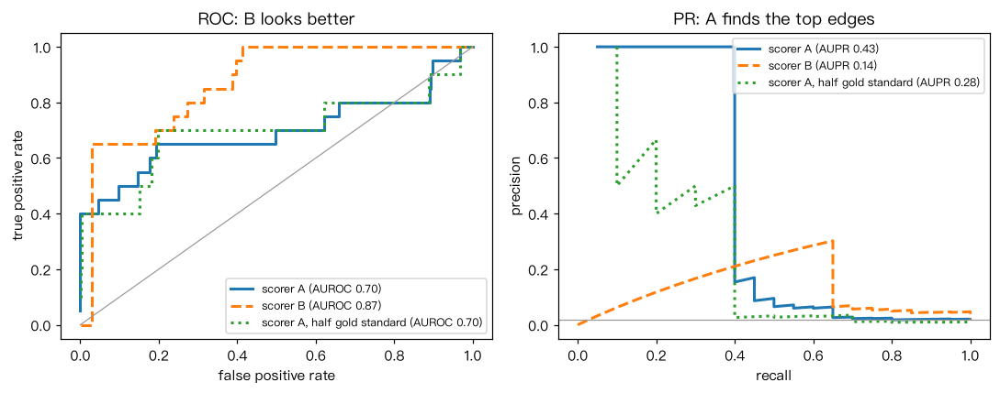

Example09 / 09
评估指标——AUROC、AUPR、早期精度与不完整金标准
1000 个候选基因对中只有 20 条真边（π = 2%）。打分器 A 把 8 条真边排在最前、其余真边与随机无异； 打分器 B 把全部真边整体前移，但有 30 个假阳性得分最高（例如批次效应造成的强共表达）。 输出解读：B 的 AUROC 更高，但 AUPR 与早期精度显示 A 对“挑出少量可验证的边”更有用。 再把金标准随机删去一半真边（模拟数据库不完整）：被漏标的真边被算作假阳性，表观精确率系统性偏低。
Output输出图

Output文字输出
真边比例 π = 0.020：随机预测的 AUROC ≈ 0.5，AUPR ≈ π，早期精度 ≈ π 打分器 A：AUROC = 0.696；AUPR = 0.431（AUPR 比 21.6）；早期精度 = 0.40（EPR 20.0） 打分器 B：AUROC = 0.869；AUPR = 0.136（AUPR 比 6.8）；早期精度 = 0.00（EPR 0.0） 打分器 A 前 20 条：按完整金标准精确率 = 0.40，按只含一半真边的金标准 = 0.20；AUPR（对不完整金标准）= 0.280
Code代码
# 1000 个候选基因对中只有 20 条真边（π = 2%）。打分器 A 把 8 条真边排在最前、其余真边与随机无异；
# 打分器 B 把全部真边整体前移，但有 30 个假阳性得分最高（例如批次效应造成的强共表达）。
# 输出解读：B 的 AUROC 更高，但 AUPR 与早期精度显示 A 对“挑出少量可验证的边”更有用。
# 再把金标准随机删去一半真边（模拟数据库不完整）：被漏标的真边被算作假阳性，表观精确率系统性偏低。
import numpy as np
def metrics(score, y):
order = np.argsort(-score, kind="stable"); ys = y[order]
tp = np.cumsum(ys); prec = tp / np.arange(1, len(ys) + 1)
aupr = np.sum(prec[ys]) / ys.sum() # 平均精确率，不做线性插值
ranks = np.argsort(np.argsort(score)) + 1
auroc = (ranks[y].sum() - y.sum() * (y.sum() + 1) / 2) / (y.sum() * (~y).sum())
k = y.sum(); ep = tp[k - 1] / k # 早期精度：前 k 条（k = 真边数）中的精确率
return auroc, aupr, ep
rng = np.random.default_rng(2)
m, k = 1000, 20
y = np.zeros(m, dtype=bool); y[rng.choice(m, k, replace=False)] = True
A = rng.random(m); A[np.where(y)[0][:8]] = 2 + rng.random(8)
B = rng.random(m) + 0.6 * y
B[rng.choice(np.where(~y)[0], 30, replace=False)] += 2
print(f"真边比例 π = {y.mean():.3f}：随机预测的 AUROC ≈ 0.5，AUPR ≈ π，早期精度 ≈ π")
for name, s in [("打分器 A", A), ("打分器 B", B)]:
auroc, aupr, ep = metrics(s, y)
print(f"{name}：AUROC = {auroc:.3f}；AUPR = {aupr:.3f}（AUPR 比 {aupr / y.mean():4.1f}）；早期精度 = {ep:.2f}（EPR {ep / y.mean():4.1f}）")
y_obs = y.copy(); y_obs[rng.choice(np.where(y)[0], k // 2, replace=False)] = False
top = np.argsort(-A)[:k]
print(f"打分器 A 前 {k} 条：按完整金标准精确率 = {y[top].mean():.2f}，按只含一半真边的金标准 = {y_obs[top].mean():.2f}；"
f"AUPR（对不完整金标准）= {metrics(A, y_obs)[1]:.3f}")
import matplotlib.pyplot as plt
fig, ax = plt.subplots(1, 2, figsize=(10, 4))
for s, yy, lab, ls in [(A, y, "scorer A", "-"), (B, y, "scorer B", "--"), (A, y_obs, "scorer A, half gold standard", ":")]:
ys = yy[np.argsort(-s, kind="stable")]; tp = np.cumsum(ys); fp = np.cumsum(~ys)
au, ap, _ = metrics(s, yy)
ax[0].plot(fp / fp[-1], tp / tp[-1], ls, lw=2, label=f"{lab} (AUROC {au:.2f})")
ax[1].plot(tp / tp[-1], tp / np.arange(1, len(ys) + 1), ls, lw=2, label=f"{lab} (AUPR {ap:.2f})")
ax[0].plot([0, 1], [0, 1], color="0.6", lw=0.8); ax[1].axhline(y.mean(), color="0.6", lw=0.8)
ax[0].set_xlabel("false positive rate"); ax[0].set_ylabel("true positive rate"); ax[0].set_title("ROC: B looks better")
ax[1].set_xlabel("recall"); ax[1].set_ylabel("precision"); ax[1].set_title("PR: A finds the top edges")
ax[0].legend(fontsize=8, loc="lower right"); ax[1].legend(fontsize=8, loc="upper right")
plt.tight_layout(); plt.show()Run在浏览器中运行
首次加载 Python 环境约需 20–40 秒；可以修改参数后重新运行。